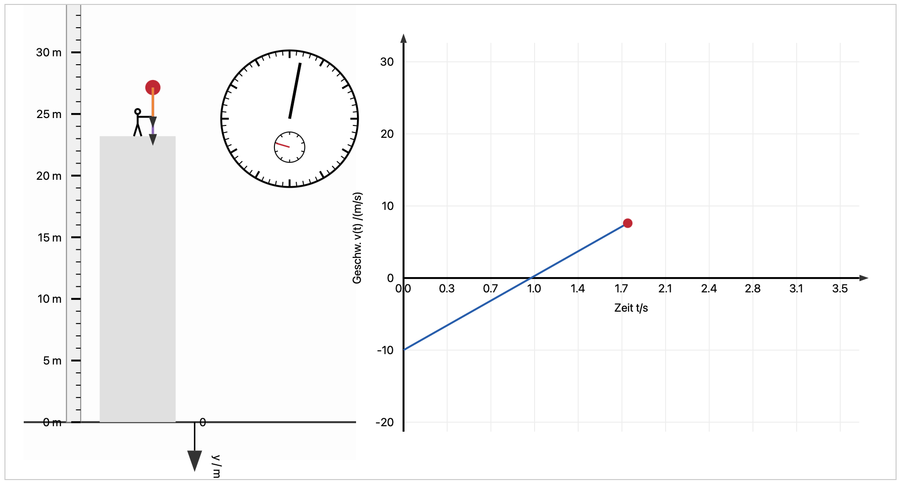
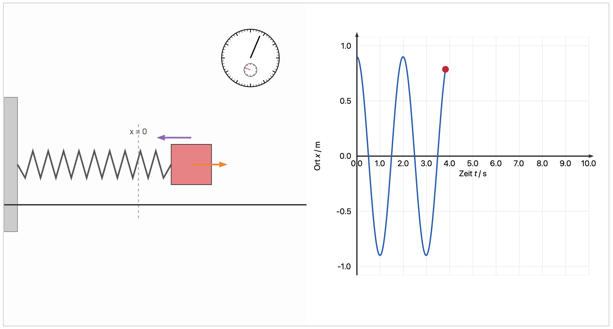
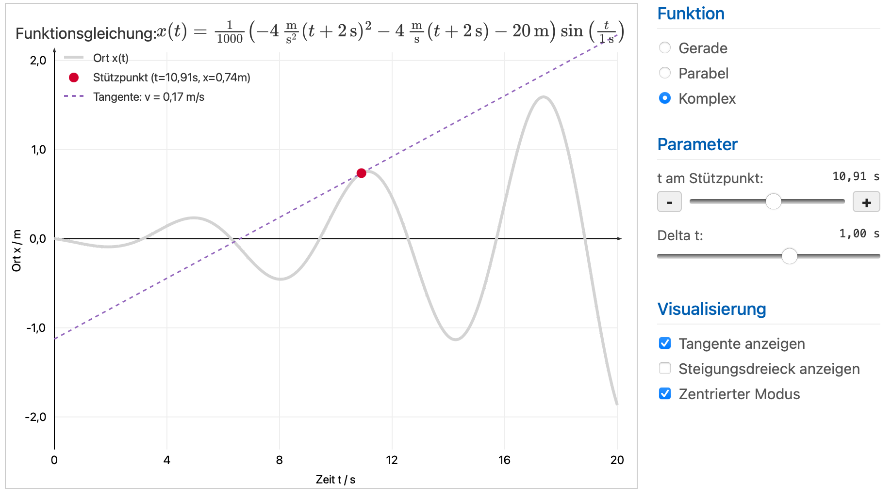
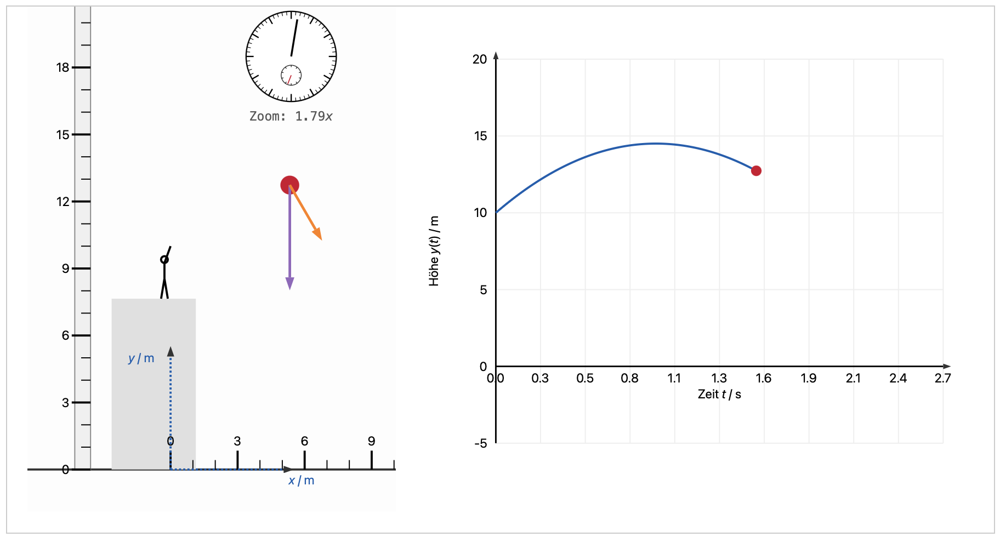
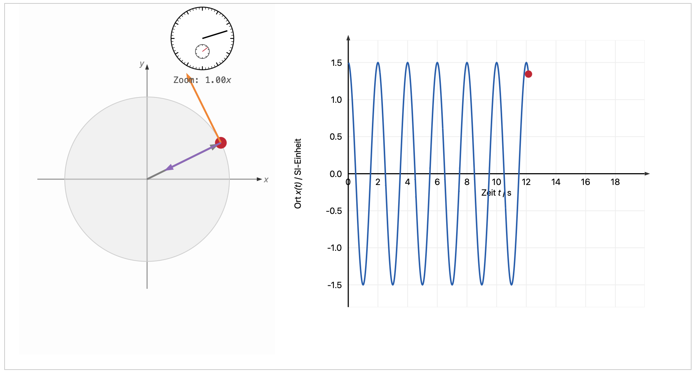
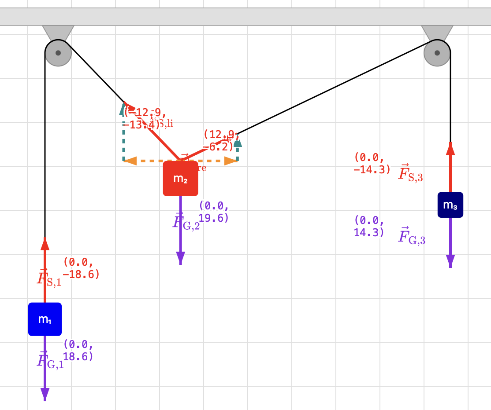
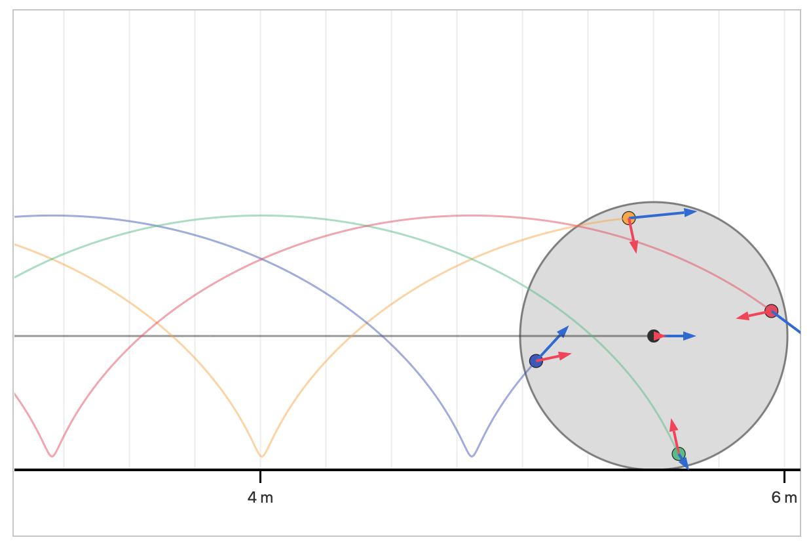

Kapitel 0: Mathematische Grundlagen

Kapitel 1.1: Kinematik in 1D, 2D und 3D
-

Freier Fall & Senkrechter Wurf
Analyse der eindimensionalen Bewegung im Gravitationsfeld mit anpassbarer Anfangshöhe und -geschwindigkeit.
-

Federschwingung
Untersuchung der Kinematik der Schwingung eines Federpendels als Beispiel einer eindimensionalen Bewegung. Darstellung von Auslenkung, Geschwindigkeit und Beschleunigung über die Zeit.
-

Geschwindigkeit als Steigung der Ort-Zeit-Kurve
Untersuchung der Geschwindigkeit als Steigung der Ort-Zeit-Kurve zur Verdeutlichung des Unterschieds zwischen Durchschnitts- und Momentangeschwindigkeit.
-

Grundbegriffe der Kinematik
Visualisierung einiger Grundbegriffe der Kinematik anhang einer Bahnkurve einer zweidimensionalen Bewegung
-

Schräger Wurf
Simulation der zweidimensionalen Wurfbewegung. Untersuchung von Vektorkomponenten und Flugbahnen.
-

Ebene Kreisbewegung
Visualisierung der gleichförmigen Kreisbewegung. Analyse von Orts-, Geschwindigkeits- und Zentripetalbeschleunigungsvektoren.
Kapitel 1.2: Dynamik: Impuls und Kraft
-

Statisches Kräftegleichgewicht
Interaktive Simulation zum Gleichgewicht von Kräften mit Umlenkrollen und Massen.
-

Die Atwood'sche Fallmaschine
Interaktive Simulation zur Atwood'schen Fallmaschine.
-

Kinematik des rollenden Zylinder / Zykloide
Interaktive Simulation zur Kinematik des rollenden Zylinders als Visualisierung des Schwerpunktsatzes.